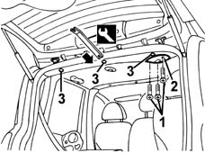
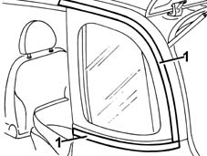
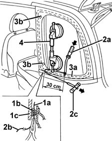
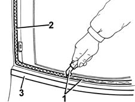
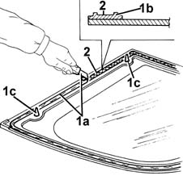
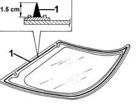
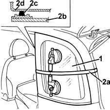

7035C10 Third SIDE WINDOW (one), left or right (bonded type) - R.R. - Includes. cleaning edges of window and housing in bodyshell
- Path
- Procedures > 70 FITTINGS > 7035 BODYSHELL WINDOWS > 7035C passenger compartment side fixed windows > 7035C10 Third SIDE WINDOW (one), left or right (bonded type) - R.R. - Includes. cleaning edges of window and housing in bodyshell
- Kind
- repair procedure (removal / refitting; the operation number is the code)
- Applies to
- all engines; all production periods
- Interactive page
- https://sloeber94.github.io/elrnDB-fMltpl/en/#/2892166
Applies to: all engines; all production periods
 Removing
Removing
 Refitting
Refitting7040H42 rear pillar trim - r r
7040G40 load compartment light bulb holder - r r (left only)
7040B18 L/H OR R/H SIDE TRIM (ONE) OF LUGGAGE COMPARTMENT/LOAD PLATFORM - ARRANGE
7040B23 back upper side trim (1), lh or rh - r r
7065C30 INTERIOR L/H OR R/H GRAB HANDLE (ONE) - R+R
7040E17 lh or rh rear courtesy light - r r (right and left).
1. Undo the bolts on the seat belt cover.
2. Remove the cover.
3. Remove the retaining buttons using the special tool.
 | Name | Country |
|---|---|---|
4 | Scraper blade | 1.878.077.000 |

Applies to: all engines; all production periods
1. Apply adhesive tape to protect the edges of the bodywork along the whole perimeter of the side window.

Applies to: all engines; all production periods
The bead of sealant of the window can be cut by:
- harmonic wire: the window can be recovered. The procedure is described below.
- vibrating knife: the window cannot be recovered. For a description of the procedure, refer to op..
1. Cut a section of harmonic wire about 50 cm long then, using pliers, insert one end (1a) of the harmonic wire through the bead of sealant (1b) which secures the window (1c).
2. Secure the end (1a) of the wire to the retaining tool (2a) located inside the vehicle.
Secure the end (2b) of the wire to the traction handle (2c) located outside the vehicle.
3. The operator inside the car must keep the end of the tool (2a) on the bead of sealant (3a) at about 30 cm from the point of passage of the wire.
The other operator outside the car must pull the handle (2c), following the outline of the window, and cut the bead of sealant (3a).
Repeat the operation in sections of about 30 cm, until the whole of the bead of sealant (3a) is cut.
During cutting, be careful with the side window's centring pins.
4. Fit the suction handle to the windscreen, then with the assistance of a second operator, remove the windscreen and rest it on a supporting stand.

Applies to: all engines; all production periods
Refitting
Removing1. Using a suitable tool, cut and smooth off the bead of sealant in the side window frame, so as to leave a thickness of between 0.25 and 1 mm, without scratching the paintwork. The sealant left in the frame will act as a backing for the new bond.
2. Clean the side window seating carefully with compressed air and thoroughly degrease with heptane.
If glueing takes place 60 minutes after cutting and smoothing the bead of sealant, treat the sealant surface with the specific activator and wait 15 minutes before fixing the windscreen.
 | Type | Component | Name | Qty. |
|---|---|---|---|---|
2 | PUR activator | Window compartment | - | - |
3. Remove the adhesive tape from the edges of the bodywork, along the perimeter of the side window.
Touch up the paintwork if necessary.

Applies to: all engines; all production periods
1. Using a suitable tool (1a), cut and smooth off the bead of sealant on the window so as to reduce its thickness to a minimum.
It is not necessary to completely remove the residual sealant; take care not to damage the moulded seal (1b).
If the centring pins (1c) break following removal, the side window can still be reused.
2. Carefully clean with compressed air the surface of the window's moulded seal and thoroughly degrease with heptane.
Check that the window is undamaged.
If glueing takes place 60 minutes after cutting and smoothing the bead of sealant, treat the sealant surface with the specific activator and wait 15 minutes before fixing the windscreen.
| Type | Component | Name | Qty. |
|---|---|---|---|---|
2 | PUR activator | (3RD' FIXED WINDOW) | - | - |

Applies to: all engines; all production periods
1. Use an air gun to extrude a bead of sealant as evenly as possible along the edge of the window.
| Type | Component | Name | Qty. |
|---|---|---|---|---|
7 | Window bonding sealant | (3RD' FIXED WINDOW) | Product n. 71711976 | - |
Begin applying the sealant from the middle of the lower edge and continue without breaks around the entire edge of the window.

Applies to: all engines; all production periods
1. With the assistance of a second operator, fit the window in its seating immediately after applying the sealant and bed it into position.
2. Fit the belt (2a) as shown in the figure and tension it so as to apply even pressure over the entire window, in order to ensure a perfect match between window (2b), sealant (2c) and window frame (2d).

Applies to: all engines; all production periods
Before refitting the interior components of the car, check that there are no leaks by carrying out a water test.
Fit the rear retaining buttons of the ceiling trim.
Fit the cover on the central rear seat belt and fix it with the bolts.
7040E17 lh or rh rear courtesy light - r r (right and left).
7065C30 INTERIOR L/H OR R/H GRAB HANDLE (ONE) - R+R
7040B23 back upper side trim (1), lh or rh - r r
7040B18 L/H OR R/H SIDE TRIM (ONE) OF LUGGAGE COMPARTMENT/LOAD PLATFORM - ARRANGE
7040G40 load compartment light bulb holder - r r (left only)
Topics linked from this page (6)
- 7040B18 L/H OR R/H SIDE TRIM (ONE) OF LUGGAGE COMPARTMENT/LOAD PLATFORM - ARRANGE
- 7040B23 back upper side trim (1), lh or rh - r r
- 7040E17 lh or rh rear courtesy light - r r
- 7040G40 load compartment light bulb holder - r r
- 7040H42 rear pillar trim - r r
- 7065C30 INTERIOR L/H OR R/H GRAB HANDLE (ONE) - R+R